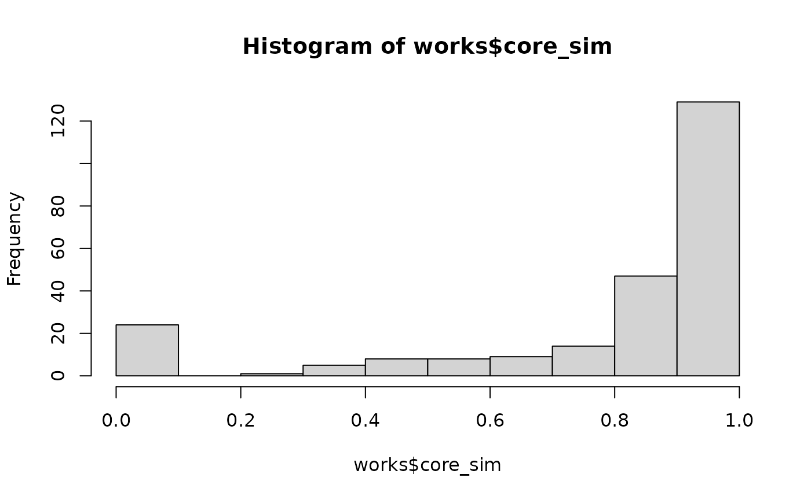

Computing the similarity of papers to an author's core set
pub_similarity.RmdGoal of this exercise: Detect publications that are assigned to an author by OpenAlex, but actually do not belong to that person (i.e., a false-positive).
We build a matrix of concept scores, where rows are publications and columns are all concepts that appeared at least once in a publication. Concepts that were not assigned to a specific publication receive the score 0.
library(dplyr)
#>
#> Attaching package: 'dplyr'
#> The following objects are masked from 'package:stats':
#>
#> filter, lag
#> The following objects are masked from 'package:base':
#>
#> intersect, setdiff, setequal, union
library(tidyr)
library(openalexR)
#> Thank you for using openalexR!
#> To acknowledge our work, please cite the package by calling `citation("openalexR")`.
#> To suppress this message, add `openalexR.message = suppressed` to your .Renviron file.
library(lsa)
#> Loading required package: SnowballC
author.id <- "https://openalex.org/A5083504666" # Mitja
#author.id <- "https://openalex.org/A5022479713" # Felix
# which concept levels should be included in the analysis?
included_levels <- 0:1
works <- oa_fetch(
entity = "works",
author.id = author.id,
is_paratext = FALSE,
is_retracted = FALSE,
abstract=FALSE,
verbose = FALSE
)
#> Warning in oa_request(oa_query(filter = filter_i, multiple_id = multiple_id, :
#> The following work(s) have truncated lists of authors: W3216869777, W4234992455.
#> Query each work separately by its identifier to get full list of authors.
#> For example:
#> lapply(c("W3216869777", "W4234992455"), \(x) oa_fetch(identifier = x))
#> Details at https://docs.openalex.org/api-entities/authors/limitations.
# filter out works that should not count for the h-index, and for the computation of academic age (i.e., works without doi and which are not published in an outlet).
# This is mostly irrelevant for the h-index, but important for the automatic retrieval of academic age.
works <- works %>% filter(!is.na(doi), !is.na(so))
# manually flag works that do not belong to Mitja Back
works$valid <- TRUE
works$valid[works$id %in% c("https://openalex.org/W3006987680", "https://openalex.org/W1966661272", "https://openalex.org/W3144672300", "https://openalex.org/W3106992603", "https://openalex.org/W3148118513", "https://openalex.org/W606769239", "https://openalex.org/W2548863919", "https://openalex.org/W4226327396", "https://openalex.org/W3144466282")] <- FALSE
con <- works$concepts
# add publication id and doi to concepts
for (i in 1:length(con)) {
con[[i]]$pub_id <- works[i, ]$id
con[[i]]$doi <- works[i, ]$doi
}
con.long <- data.table::rbindlist(con)
# reduce to required levels
con.long <- con.long %>% filter(level %in% included_levels)
con.wide <- pivot_wider(con.long, id_cols=c("pub_id", "doi"), names_from="display_name", values_from="score", values_fill=0)
# remove zero-variance columns
col_var <- apply(con.wide[, -c(1, 2)], 2, var)
con.wide <- con.wide[, !colnames(con.wide) %in% names(which(col_var == 0))]
con.mat <- con.wide[, -c(1, 2)] # remove publication id and doi column
works$ID <- 1:nrow(works)
works_reduced <- works[works$doi %in% con.wide$doi, ]
# verify that both data frames are in the same order, for later merging
all.equal(works_reduced$doi, con.wide$doi)
#> [1] TRUE
PCA <- princomp(cor(t(con.mat)))
plot(PCA$scores[, 1], PCA$scores[, 2])The matrix is very sparse: 93.2% of concept scores are exactly zero. Given this sparsity, cosine similarity seems to be a good measure.
# this is the core concept vector of an author
mean_concept_vector <- colMeans(con.mat)
sort(round(mean_concept_vector, 3), decreasing = TRUE)[1:20]
#> Psychology Social psychology Developmental psychology
#> 0.618 0.363 0.102
#> Computer science Cognitive psychology Political science
#> 0.067 0.067 0.042
#> Clinical psychology Humanities Psychoanalysis
#> 0.033 0.026 0.022
#> Applied psychology Sociology Mathematics
#> 0.020 0.019 0.017
#> Statistics Philosophy Data science
#> 0.017 0.017 0.016
#> Artificial intelligence Geography Demography
#> 0.015 0.015 0.011
#> Epistemology Econometrics
#> 0.010 0.010
# add the core concept vector in row 1 as the reference
con.mat.addMean <- rbind(mean_concept_vector, con.mat)
# compute cosine similarity
sim <- lsa::cosine(t(as.matrix(con.mat.addMean)))
# extract distance to the core concept vector
sim_df <- data.frame(doi=con.wide$doi, core_sim=sim[1, -1])
works <- left_join(works, sim_df, by="doi")
works_reduced <- left_join(works_reduced, sim_df, by="doi")
works %>% arrange(-core_sim) %>% select(core_sim, valid, display_name, so, publication_year) %>% head(10)
#> # A tibble: 10 × 5
#> core_sim valid display_name so publication_year
#> <dbl> <lgl> <chr> <chr> <int>
#> 1 0.979 TRUE Trait personality and state variabilit… Jour… 2017
#> 2 0.978 TRUE Why are narcissists so charming at fir… Jour… 2010
#> 3 0.978 TRUE A New Reliable and Valid Tool for Meas… Euro… 2012
#> 4 0.976 TRUE Personality trait stability and change Pers… 2021
#> 5 0.975 TRUE Narcissistic admiration and rivalry: D… Jour… 2013
#> 6 0.975 TRUE The Good, the Bad and the Narcissist: … Psyc… 2013
#> 7 0.975 TRUE Facebook Profiles Reflect Actual Perso… Psyc… 2010
#> 8 0.975 TRUE Interpersonal behavior in assessment c… Pers… 2022
#> 9 0.975 TRUE The associations between grandiose nar… Pers… 2023
#> 10 0.974 TRUE A Process × Domain Assessment of Narci… Asse… 2021
works %>% arrange(-core_sim) %>% select(core_sim, valid, display_name, so, publication_year) %>% tail(20)
#> # A tibble: 20 × 5
#> core_sim valid display_name so publication_year
#> <dbl> <lgl> <chr> <chr> <int>
#> 1 0.0670 TRUE Persönlichkeit 2.0 "Dat… 2010
#> 2 0.0656 TRUE Verteidiger und Entdecker: Zugehörigke… "Ess… 2022
#> 3 0.0650 TRUE Produktion von naturwissenschaftlichen… "Psy… 2017
#> 4 0.0647 TRUE Der Identitätskonflikt zwischen Entdec… "Ess… 2022
#> 5 0.0566 FALSE Gestaltungsbereiche der Digitalen Tran… "\u0… 2016
#> 6 0.0566 TRUE Back, Mitja "Spr… 2017
#> 7 0.0554 TRUE Special Issue on “The Social Psycholog… "Eur… 2019
#> 8 0.0552 TRUE Support for Refugee Integration in Wes… "Soc… 2020
#> 9 0.0484 TRUE Back, Mitja "Spr… 2020
#> 10 0.0415 TRUE Das Dreckige Dutzend und die Niederträ… "Dia… 2015
#> 11 0.0413 TRUE Von Verteidigern und Entdeckern "Ess… 2022
#> 12 0.0400 TRUE Wege aus der Vertrauenskrise "Zei… 2016
#> 13 0.0265 FALSE ON d-MEASURE AND d-DIMENSION "Rea… 1991
#> 14 0.0250 FALSE Terrific Series-7 PDF Questions 2022 T… "Zen… 2022
#> 15 0.0197 FALSE A Study on the Park Using Pattern Focu… "KSC… 2013
#> 16 0.0108 TRUE Lens and Dual Lens Models "Oxf… 2019
#> 17 0.00973 TRUE Hätte die Geschichte auch anders verla… "De … 2015
#> 18 0.00780 FALSE Strategic pricing Possibilities of Gro… "\u0… 2007
#> 19 0.00639 TRUE Flexural Analysis of Laminated Composi… "Han… 2014
#> 20 0.00603 FALSE Mining Textual Contents of Financial R… "\u0… 2004
# publication with NA in the core_sim are mostly irrelevant publications
works %>% filter(is.na(core_sim)) %>% select(core_sim, valid, display_name, so, publication_year)
#> # A tibble: 0 × 5
#> # ℹ 5 variables: core_sim <dbl>, valid <lgl>, display_name <chr>, so <chr>,
#> # publication_year <int>
hist(works$core_sim)
This works already quite well, but assumes that publications have a single core set. But authors might have multiple clusters of activity, and the mean core concept vector might fall in between two clusters. Then every single publication will have a substantial distance to this rather meaningless average concept core. Hence, a better approach might be to do k-means clustering and computing the probability of each publicationto fall into one of the clusters. This way, “lonely wolves” (which probably are publications erroneously attributed to that person) can be better identified.
library(factoextra)
#> Loading required package: ggplot2
#> Welcome! Want to learn more? See two factoextra-related books at https://goo.gl/ve3WBa
library(cluster)
library(fclust)
set.seed(0xBEEF)
# To account for the possibility that a data point doesn't fit well into any of the predefined clusters, an additional "cluster" or category can be introduced, which represents the absence of membership in any of the clusters. This is implemented in the `noise` parameter.
res.SIL <- data.frame()
for (k in 1:6) {
print(paste0(k, "/", 10))
fc <- Fclust(con.mat, k=k, noise=TRUE)
res.SIL <- rbind(res.SIL, data.frame(
k=k,
t(unlist(Fclust.index(fc)))
))
}
#> [1] "1/10"
#> The number of clusters k must be an integer in {2, 3, ..., ceiling(n/2)}: k=2 will be used
#> The standard FkM algorithm with noise cluster has been chosen
#> The default options have been set, to specify different options, use FKM.noise
#> The default value alpha=1 has been set for computing SIL.F
#> [1] "2/10"
#> The standard FkM algorithm with noise cluster has been chosen
#> The default options have been set, to specify different options, use FKM.noise
#> The default value alpha=1 has been set for computing SIL.F
#> [1] "3/10"
#> The standard FkM algorithm with noise cluster has been chosen
#> The default options have been set, to specify different options, use FKM.noise
#> The default value alpha=1 has been set for computing SIL.F
#> [1] "4/10"
#> The standard FkM algorithm with noise cluster has been chosen
#> The default options have been set, to specify different options, use FKM.noise
#> The default value alpha=1 has been set for computing SIL.F
#> [1] "5/10"
#> The standard FkM algorithm with noise cluster has been chosen
#> The default options have been set, to specify different options, use FKM.noise
#> The default value alpha=1 has been set for computing SIL.F
#> [1] "6/10"
#> The standard FkM algorithm with noise cluster has been chosen
#> The default options have been set, to specify different options, use FKM.noise
#> The default value alpha=1 has been set for computing SIL.F
res.SIL
#> k PC PE MPC SIL SIL.F XB
#> 1 1 0.3448417 0.6617511 -0.31031666 0.3329293 0.5168413 7.917595e-01
#> 2 2 0.3448417 0.6617511 -0.31031666 0.3329293 0.5168413 7.917595e-01
#> 3 3 0.3427854 0.8731429 0.01417807 0.2718121 0.3918245 7.238158e-01
#> 4 4 0.3152179 1.0748947 0.08695726 0.2339157 0.4528431 8.207272e-01
#> 5 5 0.2875915 1.2537603 0.10948933 0.2125685 0.5017623 7.099843e+17
#> 6 6 0.2643940 1.4050679 0.11727285 0.2212134 0.5526729 Inf
fc <- Fclust(con.mat, k=2, noise=TRUE)
#> The standard FkM algorithm with noise cluster has been chosen
#> The default options have been set, to specify different options, use FKM.noise
# U contains the membership probabilities
works_reduced$lonely_wolf_index <- 1-rowSums(fc$U)
LW <- works_reduced %>% arrange(-lonely_wolf_index) %>% select(lonely_wolf_index, display_name, so, publication_year, id)
head(LW)
#> # A tibble: 6 × 5
#> lonely_wolf_index display_name so publication_year id
#> <dbl> <chr> <chr> <int> <chr>
#> 1 0.676 Generalizability of Clinical P… "med… 2024 http…
#> 2 0.657 Flexural Analysis of Laminated… "Han… 2014 http…
#> 3 0.634 ON d-MEASURE AND d-DIMENSION "Rea… 1991 http…
#> 4 0.628 Produktion von naturwissenscha… "Psy… 2017 http…
#> 5 0.626 Strategic pricing Possibilitie… "\u0… 2007 http…
#> 6 0.623 Wege aus der Vertrauenskrise "Zei… 2016 http…
library(ggplot2)
library(ggrepel)
ggplot(works_reduced, aes(x=lonely_wolf_index, y=core_sim, color=valid)) + geom_point() + geom_text_repel(aes(label=ID))
#> Warning: ggrepel: 194 unlabeled data points (too many overlaps). Consider
#> increasing max.overlaps
Third attempt: Use the ORCID record
(Note: This code is not executed in this vignette, as it needs an ORCID authentication).
In my experience, ORCID record fewer publications than OpenAlex, but these are mostly correct. Hence, ORCID has mostly true positives but quite some false negatives, while OpenAlex has more true positive at the cost of more false positives. Can we combine the strengths of both?
Here, I try to use the ORCID publication record as a reference set to find false positive in the OpenAlex record:
library(rorcid)
library(openalexR)
library(janitor)
library(dplyr)
au <- oa_fetch(entity="author", id=author.id)
au$orcid
library(httr)
orcid_works <- rorcid::works(substr(au$orcid, 19, 38)) %>%
as_tibble() %>%
janitor::clean_names() %>%
dplyr::mutate(created_date_value = anytime::anydate(created_date_value/1000))
orcid_works_cleaned <- orcid_works %>% filter(!is.na(publication_date_year_value))
orcid_works_cleaned$dois <- sapply(orcid_works_cleaned$external_ids_external_id, function(x) {
if (length(x) == 0) {
return(NA)
} else {
x2 <- x[x[, "external-id-type"] == "doi", ]
if (nrow(x2) > 0) {
return(x2[1, "external-id-normalized.value"])
} else {
return(NA)
}
}
})
orcid_works_cleaned$dois <- paste0("https://doi.org/", orcid_works_cleaned$dois)
works$in_ORCID <- works$doi %in% orcid_works_cleaned$dois
works_reduced$in_ORCID <- works_reduced$doi %in% orcid_works_cleaned$dois
con.wide$in_ORCID <- con.wide$doi %in% orcid_works_cleaned$dois
# add the ORCID mean concept vector in row 1 as the reference
mean_ORCID_vector <- colMeans(con.mat[con.wide$in_ORCID, ])
con.mat.addMean2 <- rbind(mean_ORCID_vector, con.mat)
# compute cosine similarity
sim2 <- lsa::cosine(t(as.matrix(con.mat.addMean2)))
# extract distance to the core concept vector
sim_df2 <- data.frame(doi=con.wide$doi, ORCID_sim=sim2[1, -1])
works <- left_join(works, sim_df2, by="doi")
works_reduced <- left_join(works_reduced, sim_df2, by="doi")
plot(works_reduced$core_sim, works_reduced$ORCID_sim)
cor(works_reduced$core_sim, works_reduced$ORCID_sim)
works_reduced %>% arrange(-core_sim) %>% select(core_sim, valid, display_name, so, publication_year) %>% tail(20)
works_reduced %>% arrange(-ORCID_sim) %>% select(ORCID_sim, valid, display_name, so, publication_year) %>% tail(20)
ggplot(works_reduced, aes(x=core_sim, y=ORCID_sim, color=valid)) + geom_point() + geom_text_repel(aes(label=ID))
ggplot(works_reduced %>% filter(ORCID_sim < .10), aes(x=core_sim, y=ORCID_sim, color=valid)) + geom_point() + geom_text_repel(aes(label=ID))
ggplot(works_reduced %>% filter(ORCID_sim < .10), aes(x=lonely_wolf_index, y=ORCID_sim, color=valid, shape=in_ORCID)) + geom_point() + geom_text_repel(aes(label=ID))Which publications are added by OpenAlex, and are they valid?
Without selection by ORCID similarity:
table("in ORCID"=works_reduced$in_ORCID, "Valid"=works_reduced$valid)With selection by ORCID similarity (cutoff = .05):
table("in ORCID"=works_reduced$in_ORCID, "Valid"=works$valid, "outlier"=works_reduced$ORCID_sim <=.05 & !works_reduced$in_ORCID)Hence, the candidates for invalidly assigned publications are: